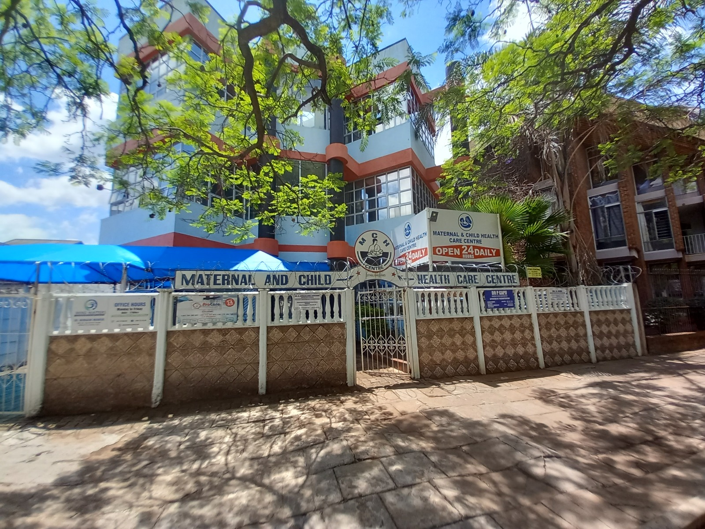

maternal & child health care centre
We Are Professional & Accessible.
MHC Center provides care with sign-language trained staff and wheelchair-friendly facilities.

Your journey to motherhood starts here with us.
Regular child wellness checks.
About Us
Established in 1985, we have grown from a single townhouse to a full-fledged service health-care facility.
Profile
Authored by Sister Bester Chamboko
📌 Overview
- Established: August 1985, in Bulawayo, Zimbabwe.
- Founder/Proprietor: Sister Bester Chamboko.
- Mission: To deliver high-standard health-care to mothers (especially working mothers) and children (mainly under age five), using an appointment-based system to minimise queues.
🏥 Current Services
- Well Baby Clinic: Includes immunisations (Zimbabwe Expanded Programme of Immunisations).
- Well-Woman Clinic: Offers family planning services.
- Maternity Services: Includes antenatal and postnatal care.
- Referrals to local doctors and paediatricians when needed.
- Parent-craft education (including relaxation exercises).
- Postnatal and fitness classes for women.
👩⚕️ Staff
Eight employees: Registered General Nurses, Midwives, a part-time Accountant, an Administrator, and support staff.
🏗️ Growth & Development
- Originally we operated from small premises, a townhouse at Fort Street and 14th Avenue.
- We moved in 1992 after acquiring a larger property at number 113A Josiah Tongogara Street, Bulawayo.
- A 1996 survey confirmed client satisfaction and demand for on-site delivery services.
- In 2002, the original structure was demolished to allow for expansion into a three-story facility.
🌟 Future Aspirations
To offer full maternity-home services with over-night stays, to including:
- An operating theatre for C-sections (in collaboration with local Obstetricians and Paediatricians).
- A special care unit for babies. This was achieved and is in place now.
- Increasing capacity to cater for up to 50 inpatients.
- Employment opportunities for expanded staff.
🙏 Closing Note
The founder (Sister Bester Chamboko) expresses deep gratitude for long-standing community support, attributing MCH's success to local engagement.
Comprehensive Care For Every Family.
We believe every mother and child deserves Dignified, Accessible Healthcare.
From prenatal classes to postnatal support, our team guides you through every step.
Our Specialized Services
Delivering compassionate care through every stage of motherhood and childhood.